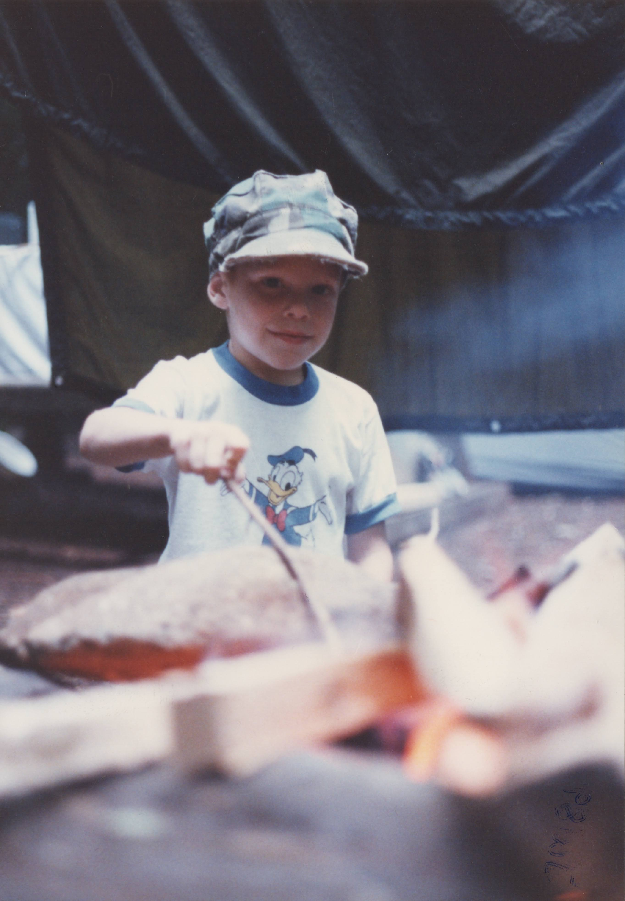

I think the hardest part about starting anything for anyone is simply the 'getting started' part.
It often feels like that has been the single force stopping me from starting a blog, vlog, or really anything in life. Starting just has always felt so overwhelming for me, where do I begin? I have even been neglecting my social media, and well, really not posting or sharing much of anything in my life.
Where my story begins
But, you're probably here for my story. So here it goes... My name is Thirteen Nebula. I’m 42 years old, but if you asked me how old I feel, I might tell you 27… or 18… or something that doesn’t quite line up with my date of birth. That’s because time doesn’t flow in a straight line for me; it loops, folds, expands, and contracts. Memories live in vivid 3D lifelike clips I can relive anytime as well as rotate views, pause, and zoom in on. Some of them hurt; some of them inspire. And I carry all of them with me, like stones in a backpack, polished by time.
And I carry all of them with me, like stones in a backpack, polished by time.
I'm non-binary. I’m Autistic. I have ADHD. I have Tourette’s. And for the first time in my life, I’m finally learning how to live as myself instead of trying to survive as someone else. For most of my life, I didn’t know there was a name for what I was going through. I just knew I was different (weird is what they all called me), and that difference made the world confusing, painful, beautiful, and overwhelming all at once. My diagnosis didn’t give me a label; it gave me a mirror so I could see everything. Everything clicked. The sensory stuff, the social exhaustion, the emotional depth, the way I see the world in patterns and systems and details others miss, it all made sense. Autism was the missing "puzzle piece" that made the puzzle of my life complete.
Learning how to pass as normal

As a kid, I was a sponge. I could read at a fifth-grade level in second grade, finished every test early, and even got to help other students. I would memorize every note and beat in songs, studied facial expressions, and watched movies over and over to try and learn how to be a person. I didn’t know other people weren’t doing that stuff. I thought everyone had to work that hard just to pass as normal. My special interests were intense and ever-changing. Rocks, Lego's, lizards, guns, electronics… now it’s solar power, off-grid living, adventures, and neurodivergence advocacy. When I fall in love with a topic, I fall all the way in.
But masking came at a high cost. People could tell I was different, even when I was trying so hard to blend in. I was bullied and beaten. I was misunderstood for just existing. I learned to people-please, to chase perfection, to put others before myself always… until I burned out again and again. School felt like a prison of demands; holidays felt like forced performance; authority of any kind felt like intrusion unless trust was built first. Even now, simple things like ordering food, making an appointment or phone call, or following traffic signs can feel like existential threats. That’s called Pathological Demand Avoidance (PDA), and for me it’s extremely real, thought I prefer to call it Expectational Demand Avoidance (EDA) because that's more like what's happening in my brain. It’s not stubbornness, it’s rooted in survival.
It’s not stubbornness, it’s rooted in survival.
Building a space that feels safe
I've lived in my truck for 2 years now; a blacked out '04 Chevy Suburban Z71 4x4 I turned into a tiny off-grid sanctuary. Solar panels, Reflectix, blackout curtains and panels, a whole living area and kitchen I designed myself… it’s not just a vehicle, it’s a full on coping mechanism. But, I feel safer in there than I ever did in a house. Being inside a home or apartment often felt encasing, suffocating, like every wall held a memory or demand. Not to mention the countless hours I had to exchange in labor just to have a place to store my things and sleep between work. My truck is freedom. It’s the one space that’s mine where I can control the lights, the sounds, the textures, the smells, and the people allowed inside.
Feeling everything
I experience the world differently. My senses are cranked to 11. I hear fluorescent lights buzz, I feel the pressure and humidity change in a room before a storm, even sense when a TV is on by the "whine" the capacitors and voltage transformers make. Every hair on my body is like a tiny radar dish picking up the faintest signals. I feel emotions like vibrations; sometimes mine, often other people’s, sometimes even from animals or trees. Alexithymia (the inability to name or understand feelings) makes it hard to name what I feel, but that doesn’t mean I’m not feeling it. On the contrary, I feel literally everything… sometimes too much.
Along with feeling everything, I also live with chronic pain. A rollover accident at 14 left me with spinal damage that never truly healed. Then, in 2011, I was struck by lightning. Yes, really. That’s not the start of a superhero origin story, but it changed me in ways I’m still discovering. Daily I deal with fatigue, joint and muscle pain, brain fog, memory issues, tremors and tics, and sensory overload on a daily basis. Holding down jobs has always been... impossible. It's not because I don’t want to work, but because most systems aren’t built for people like me. I’ve had over 30 jobs and even started several businesses. But honestly, I’ve survived more than I’ve ever thrived.
But honestly, I’ve survived more than I’ve ever thrived.
Still here
But I’m still here holding on... existing. I still dream. I still love to create, to build, to learn, to help others. I’m working on telling my story more openly now because for so long I didn’t feel allowed to. I want people to know what autism looks like when it’s hidden in plain sight. I want people to understand that neurodivergence isn’t brokenness... it’s a different operating system. Autism or ADHD alone can be absolutely disabiling but, with the right support and accomodations, people like me can still do incredible things.
My hope is that if someone reads this and sees themselves in it, they’ll feel a little less alone. If someone reads this and doesn’t see themselves, they’ll hopefully understand someone they know or love a little better. This is my life. Messy, magical, hard, and human. But truthfully, I wouldn’t trade the way I see the world for anything.